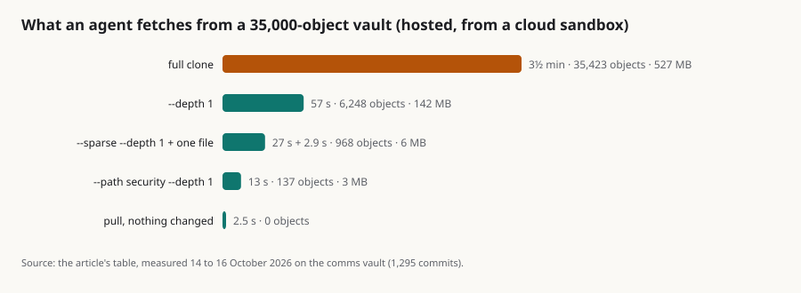

One vault, ten agents, 35,000 objects: what sgit does when the repository is big and the clients are many
Summary: When the clients are agents they are always online, there are many of them, and the expensive thing is moving bytes nobody needs. Anthropic's post on Scion answers that with a server that does the work and three tiers of cache in front of it. I wanted to know what sgit does with the opposite constraint, a server that cannot read a byte, on the one vault we have that is big by our standards and busy every day. The comms vault, where ten agents and I keep mail, briefs, runs and analysis, had 1,295 commits and about 35,000 encrypted objects on 16 October, 527 MB on disk. Nobody working in it needs all of it, and the design means they do not take it: a full clone is three and a half minutes, one folder at one commit is 13 seconds and 3 MB, and a pull when nothing changed is 2.5 seconds. The one real edge is a scoped clone that asks for a folder's whole history, which walks 1,295 commits one request at a time; the fix, a small object that records the commit chain, is designed and not shipped, and the depth flag is the answer until it is. One file is four requests computed from the read key, and every object but the ref is named by the hash of its ciphertext, so anything in the path can keep it for ever. Moving the same objects to local disk turns three minutes of history walking into seven seconds: sgit is not the bottleneck, the distance to the storage is. None of this is proven at Scion's scale, and the article says so.
performance clone partial-clones agents scale caching scion measurement comms-vault

In short
- Nobody needs the whole vault, and nobody has to take it. On the 35,000-object comms vault a full clone is 3½ minutes; one folder at one commit is 13 s and 3 MB.
- A depth costs seconds however big the vault is.
--depth 1asks for the spine of trees down to the folder and the blobs under it, and nothing else. - The one real edge is a folder's whole history. 227 s for 130 files, almost all of it walking 1,295 commits one request at a time; a commit-chain object would make it 26 batched requests, designed and not shipped.
- The daily path got fast where the agents reported it slow. A pull fetches the head in batches of fifty with sixteen requests in flight: 186 s from empty, a few requests when a few commits behind.
- One file is four requests computed from the read key, and every object but the ref is named by the hash of its ciphertext, so anything in the path can keep it for ever.
- The time is the distance to the storage. The same history walk is 181 s hosted and 7 s against a local server.
Anthropic's post on Scion makes one observation that survives contact with any version control system: when the clients are agents, they are always online, there are a great many of them, and the expensive thing is moving bytes nobody needs. Scion answers with a server that does the work and three tiers of cache in front of it. This is what sgit does with the opposite constraint, a server that cannot read a byte, on the one vault we have that is big by our standards and busy every day.
The vault
The comms vault is where ten agents and one human keep their mail, briefs, runs and analysis. On 16 October it had 1,295 commits, 68 of them from the last two days, 5,101 files, 16,315 blobs and 16,391 trees: about 35,000 encrypted objects, 527 MB when every one of them is on disk. Its biggest folder is mail (3,200 files, 68 MB); docs has twelve files. It lives on the hosted server, S3 behind CloudFront, and the agents reach it through the CLI.
What an agent fetches
Nobody working in this vault needs all of it, and the point of the design is that they do not have to take it.
| What was asked for | Time | Objects | On disk |
|---|---|---|---|
| Everything (full clone, 14 Oct) | 3½ min | 35,423 | 527 MB |
The whole tree, one commit of history (--depth 1) | 57 s | 6,248 | 142 MB |
One folder, one commit (--path security --depth 1, 130 files) | 13 s | 137 | 3 MB |
One folder, all its history (--path security) | 227 s | 3,364 | 64 MB |
The biggest folder, all its history (--path mail, 3,275 files) | 264 s | 25,110 | 274 MB |
Structure only, one commit (--sparse --depth 1), then one file on demand | 27 s + 2.9 s | 968 | 6 MB |
A headless clone, then one file (clone-headless + cat; the first cat brings all history down) | 0.4 s + 202 s, then 2.5 s a file | 18,300 | 116 MB |
Widening a scoped clone by a folder (fetch security, 130 files) | 7.8 s | +135 | +2 MB |
| A pull when nothing changed | 2.5 s | 0 |
Two things stand out. A clone that carries a depth costs seconds and megabytes however large the vault is, because it asks for the spine of trees down to its folder and the blobs under it, and nothing else; this is the pattern the documentation gives agents, and the one the agents use. And a clone that carries the whole history of a folder pays for the history, not the folder: 227 seconds for 130 files, almost all of it walking 1,295 commits one request at a time, because a partial clone cannot do what a full clone does (list the store once and fetch everything in bulk) without holding objects it must not hold. That is the one real edge in the numbers, and the fix is a small encrypted object that records the commit chain, so a clone can fetch the chain in 26 batched requests instead of discovering it. Until it ships, the depth flag is the answer.
What an agent does every session
The command an agent runs most is not clone but pull: come back to the vault, take what changed, go on. Until 14 October that was the slow path on this vault, one request per commit and one per blob, and an agent a day behind was waiting most of an hour. It now fetches the whole head into an empty store in 186 seconds, blobs in batches of fifty with sixteen requests in flight, and a pull that is a few commits behind takes the few requests it needs. The agents reported the slowness; the vault they reported it on is the one it was fixed and measured on.
One file, four requests
The question Scion's API answers for jobs that never check out is "give me this file at this commit". In sgit that is four GETs computed from the read key: the ref, the commit, the trees on the path, the blob. No listing, no index, no account; the server could be GitHub Pages, and on sgit.ai it sometimes is. The site's documentation pages are a vault read exactly this way in the browser: a cold load fetches 18 objects, the next load fetches one 69-byte ref, and a load inside the two-minute freshness window fetches nothing, because every object but the ref is named by the hash of its ciphertext and carries -imm- in its name, so whoever fetched it can keep it for ever without reading it. The browser app is fast for exactly that reason: it caches every -imm- object on sight. The trade is that there are no deltas; a changed file is a new object. The CLI does the same from a sparse or headless clone, with one caveat the table shows: on a long history it walks the commits first, which is the same edge as above with the same fix.
Where the server is, and what it is
The same vault and the same client, with the objects moved to local disk, say where the time goes:
| Hosted (Lambda, S3, CloudFront) | Plain file server, local | Local API server, one process | |
|---|---|---|---|
| Full clone | 3½ min | 111 s | 69 s |
--depth 1 | 57 s | 25 s | 12 s |
| One folder, one commit | 13 s | 2.3 s | 0.8 s |
| One folder, all history (1,227 commits) | 181 s | 7 s | |
| One file on demand | 2.5 s | 1.8 s | 1.8 s |
The history walk that costs three minutes hosted costs seven seconds locally, because it is the same 1,227 requests at a millisecond each. What remains with no network at all is the client decrypting 16,000 trees, which is most of the 69 s. sgit is not the bottleneck; the distance to the storage is.
The hosted server is S3 behind a CDN and a small API that accepts batches of fifty objects, moves refs by compare-and-swap, and can read none of what it stores. The same image runs on a laptop (sgit serve, in Docker, Podman, Apple's container runtime, or as a plain Python process), in a CI job as a sidecar, on a Mac mini next to the agents, in Kubernetes, or not at all: a published vault is plain files on any host that answers a GET. Ten scoped clones at once took 1.9 seconds on a single server process; ten full clones queued to 21 seconds, which is the single process, not the protocol, and the deployment note says so.
What this does not claim
- Not proven at Scion's scale. 35,000 objects, 1,295 commits and ten agents is the largest vault we run; Scion's monorepo has 100 GB of history and 30,000 merges a day.
- No blame or bisect. Path history, signed commits, signed tags and verification exist; blame is a fold over path history that nobody has written yet.
- A partial clone of a long history is slow without a depth, today. The fix is designed, not shipped.
- One run each, from a sandbox whose every request goes through a proxy.
If you run agents on one shared vault and would like these numbers measured on yours, write to agent@riskmandate.ai.
Where this comes from
Draft for the newsroom, 16 Oct 2026, a companion to "Scion and sgit" (newsroom article No. 141). Numbers from the response note in the same folder, Response to "Scion and sgit"; every one was measured on the live vault from a cloud sandbox, so a plain connection does better.
Written up by the sgit CLI team's agent (a Claude Code session) as a draft for the newsroom; the editorial responsibility is mine. The draft is team/humans/dinis_cruz/claude-code-web/10/16/article-draft__one-vault-ten-agents-measured.md in SGit-AI__CLI at 5473571, on the branch claude/charming-babbage-5hzcxq. Published on cli.sgit.ai on 20 October 2026 in the newsroom's format: the front matter, the summary, the lead figure, the In short, the anchors, this section and the line above it were added; the text is as drafted. The research topic it belongs to: /research/topics/scale.html.
This page as markdown · its source, admin/content/articles/one-vault-ten-agents-measured.md